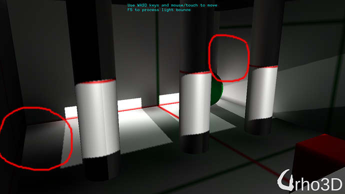

Lumak
Early Merry Christmas, repo: https://github.com/Lumak/Urho3D-Lightmap

Early Merry Christmas, repo: https://github.com/Lumak/Urho3D-Lightmap
Update the roomScene.xml to make the baked texture seamless.

Looks great ! is there a way to bake some indirect lighting too ? Like AO and GI ? If yes or there’s EVEN a plan to implement it i will switch to this right away !
Direct lighting only:


press F5 to start the light process and once complete, technique is changed to xxLightMap and the results should look like this with indirect lighting… unless I forgot to check something in.


Nice work, thanks for sharing 
I managed to write bake indirect lighting code and capture, but what’s captured is not what I expect. It looks like just a larger version of the lightmap instead of direct+indirect+shadows. Is that what you expect?
It might help you understand if I posted some images.
edit: nvm, indirect baked texture = diffuse texture + indirect lighting. The lightmap is just indirect lighting, no texture. Anyway, indirect process is in the repo.
direct bake

lightmap

indirect bake

Updated repo w/ bake indirect and misc. cleanup.
I wrote some test code to process solidangle color averaging in the background thread to reduce the overall build time for larger indirect lighting textures sizes, 128x128 and 256x256, and these are the kind of numbers that I’m getting in the lightmap.log file.
-------------128x128---------
[Mon Dec 4 09:13:25 2017] INFO: node7: indirect completion = 20.78 sec.
[Mon Dec 4 09:13:25 2017] INFO: node9: indirect completion = 20.79 sec.
[Mon Dec 4 09:13:25 2017] INFO: node10: indirect completion = 20.81 sec.
[Mon Dec 4 09:13:37 2017] INFO: node5: indirect completion = 33.39 sec.
[Mon Dec 4 09:14:04 2017] INFO: node8: indirect completion = 60.55 sec.
[Mon Dec 4 09:14:24 2017] INFO: node6: indirect completion = 80.01 sec.
-------------256x256---------
[Mon Dec 4 09:17:26 2017] INFO: node7: indirect completion = 81.61 sec.
[Mon Dec 4 09:17:26 2017] INFO: node9: indirect completion = 81.65 sec.
[Mon Dec 4 09:17:26 2017] INFO: node10: indirect completion = 81.69 sec.
[Mon Dec 4 09:18:13 2017] INFO: node5: indirect completion = 128.24 sec.
[Mon Dec 4 09:20:08 2017] INFO: node8: indirect completion = 243.74 sec.
[Mon Dec 4 09:21:21 2017] INFO: node6: indirect completion = 316.35 sec.
You can specify the size at line 258 in LightmapCreator.cpp:
lightmap->BeginIndirectLighting(outputPath_, 256);Detail images:
lightmap

baked indirect

And you have to ask, is it worth creating a higher res image for indirect bake. And the answer is no.
There are obvious detail difference in the lightmap images from 64x64 to 256x256, but the diff of baked indirect images aren’t all that different.
diff image online w/ fuzz 1%

Really no difference when comparing the default size at 64x64.
-------------64x64---------
[Mon Dec 4 11:28:45 2017] INFO: node7: indirect completion = 5.37 sec.
[Mon Dec 4 11:28:45 2017] INFO: node9: indirect completion = 5.37 sec.
[Mon Dec 4 11:28:45 2017] INFO: node10: indirect completion = 5.38 sec.
[Mon Dec 4 11:28:49 2017] INFO: node5: indirect completion = 9.14 sec.
[Mon Dec 4 11:28:54 2017] INFO: node8: indirect completion = 14.90 sec.
[Mon Dec 4 11:29:00 2017] INFO: node6: indirect completion = 20.73 sec.
total time = 20.73 sec.
--- threaded
[Mon Dec 4 11:30:11 2017] INFO: node7: indirect completion = 5.38 sec.
[Mon Dec 4 11:30:11 2017] INFO: node9: indirect completion = 5.39 sec.
[Mon Dec 4 11:30:11 2017] INFO: node10: indirect completion = 5.40 sec.
[Mon Dec 4 11:30:14 2017] INFO: node5: indirect completion = 9.07 sec.
[Mon Dec 4 11:30:20 2017] INFO: node8: indirect completion = 14.76 sec.
[Mon Dec 4 11:30:26 2017] INFO: node6: indirect completion = 20.49 sec.
total time = 20.49 sec.
You can save about a minute when creating 256x256 image threaded, but as mentioned previously, it’s not worth it. And for this reason, I won’t be checking in my threaded test code to the repo.
I was very skeptical about the diff’d images, and looking through my code, I realized I was calling lightmap->SetSavefile(false); early on to skip updating my baked files.
True diff images:
64v128

128v256

Repo updated w/ solid angle color computation threaded option, and more importantly the indirect render texture is now fixed to 64x64.
Repo updated: runs 4x faster. The default scene setup now completes in ~5 secs.
Thanks 4 share… nice christmas gift 
You’re welcome 
Repo updated: refactored lightmap.cpp and created texturebake.cpp. This is the last update I’ll make this year.
I’m curious: any chance this can be used with external tools such as Mitsuba or Eevee?
Doing lighting correctly is something extremely difficult and this project could benefit from being a modular way of integrating renderers, instead of trying to render things itself. That’s just my two cents, of course! Amazing effort. Learning a lot from your code, Lumak. You rock.
I’m not aware of Eevee but have studies Mitsuba about a couple of years ago. Mitsuba does generate perfect lighting images but it does this by screen space raycasts, and there are variations of raycast options, does it on the CPU, and is really slow.
My implementation is based on Hugo Elias’s Radiosity. Except, I haven’t implemented the skipping of pixels, evaluate, and interpolate part, but brute force pixel processing. And I also use hemisphere instead of hemicube that everyone who’s ever implemented Hugo’s method that I’ve seen are so keen to believe that is the best option.
Using Urho3D’s tech., indirect light processing is blazing fast. And the accuracy only depends on the lightmap/indirect light resolution that you choose.
Here’s an example of the lightmap image created at 512x512 resolution:

I never realized how accurate Hugo’s method was until I observed the cascading light and shadow at the top/left of the image and color bleeding.
That description above, I will have to use it on my github repo page.
I see. But isn’t speed that much of a concern when you’re baking lights? Or are you planning of generating lightmaps in realtime, similar to what Sauerbraten does?
Generating lightmaps at runtime to achieve static GI is exactly what’s happening in my demo - just skip baking textures because you really don’t need them, unless you’re wanting to remove lights from the scene and render baked images as unlit.
Speed is a concern to me. I don’t know about you but, I can remember a number of times when I’ve tried generating lightmaps in other engine/program and having to wait 40 mins. to see resulting lightmap textures with undesirable blemishes even for scenes strictly with box only type geometries.
What makes Mitsuba not work in this case is, it only does screen space processing. If you’re wanting to only do screen space, there are plenty of shaders out there that can do SSGI, of course, w/o BRDF that Mitsuba applies in its process.
edit: had to rephrase.
edit2: sry, I don’t know what a Sauerbraten is.
Let me also mention that there is a baked scene sample in Lightmap/bakedScene.xml which demonstrates rendering bakedIndirect as Unlit w/o any lights in the scene.
Now i understand what your goal is! I thought this was intended to be a lightmap baking tool, such as the ones included in UE and Unity.
About embree: https://github.com/prideout/aobaker
About sauerbraten: http://sauerbraten.org/
http://sauerbraten.org/docs/editref.html
My original title for this thread was named “baking” something, so yeah, I really didn’t describe what I’ve implemented exactly. And I’m not sure if “generator” describes it properly.
I’ve not seen nor tried UE and Unity lightmap baking tool to know if I generate something comparable. I wrote this and the lightprobe to replace a ton of lights that I had in a scene that I couldn’t have in real time for mobile device.
Testing second light bounce in the demo.
edit: i guess it’d help to have a reference of the 1st bounce
light bounce=1

light bounce=2

Looking at the bounced light results had me look over my solid angle calculation again, and I believe there was an error.
edit: nope, it’s mathematically correct.
I don’t know why but the indirect light doesn’t feel and seem right.
The red circles show some random artifacts and the whole area between the red cube and the pillars are too bright.Also where the pillars touch the ground doens’t seem right either.There are some bright circle shaped artifacts around them.

Yeah, I’ve noticed some strange artifacts.
One that really boggles my mind is this one:

I’ve gone through the debug draw process of drawing every point and normal on every object in the scene and they’re correctly positioned and points outward from where they should be. Yet, how does a star cluster form on a sphere when irradiance of close or next neighbors should be gradient if not the same.
Math wise, I don’t massage my irradiance value during computation. What you see is what’s been calculated from what’s returned from render texture.
Is the same artifact happens if you increase the resolution ? It seems like an ultra low resolution lightmap issue
That’s good news.Any screen shots ?
images of fixes


Just playing around with this: where can I set the bounces? Or is that feature not in yet?
I’ve not put that in yet. Mathematically, the irradiance calculation is correct, but I it just looks too bright to me. I’ll need to verify it with a second source and compare the results before I can check that in.
It’s simple to implement.
LightMap_IndirectLightBegin;
Lightmap::BeginIndirectLighting to State_IndirectLightBegin
Maya’s second light bounce room image. I tried to dummy down the GI bake settings in Maya to mimic Hugo’s radiosity: sampling at 4096 (base on 64x64 texture size), no bake shadow, etc., because Maya does have some pretty sophisticated settings you can setup. And I probably don’t have the shaders set correctly because I’m losing color on no-texture objects.
Baked images on 64x64 texture size.
Hugo:

Maya:

Summing the luma of generated second bounce images, Hugo’s method accumulated ~19% more light than Maya.
If I multiply irradiance by 50% Luma and summed with 20% of the original color, I get:

Testing alternate approach by turning off all the lights in the scene and sampling light emitted from the lightmap in the first indirect light pass, results in the 2nd pass image below.
Total luma captured in the scene is 5% more than Maya. First, sampling was 19% more. Of course you can always tone down color by replacing the percentage of the color with luma.

Posting Maya image again for easy comparison:
Luma, RGB remove.

This looks a lot better IMO. Nice one!
Quick question: does this auto-unwrap my scene? Or i have to do that myself? That scene is a single object?
By
I think you mean, does it uv unwrap. No, it doesn’t do any uv unwrapping. Each model is expected to already have texCoord2.
The scene has 6 static models, each with its own texcoord2.
Repo updated: 2ndary light bounce and clean up.
Final comparison with Maya: Hugo’s method results in 3.5% less light. And the default output is luma, no RGB. Set lumaOutputColor_=false in Lightmap.cpp for color.

What’s the reason of these gradients lines on the columns? Looks like an artifact.
Ya, the pillars look like shit. It’s the way it’s uv mapped. It’d probably come out a lot better if Thekla uv mapper is used, but that’s entirely a whole another project and I’m not touching that.

I have one word , beautiful.
Would be useful for low end mobile devices.
Once I will have some spare time will try it on more complex scene’s
I will have another repo update before Christmas. Update will include baking direct and indirect to produce a combined Unlit texture, so you can have it in a static environment.
Final will include:

Looking great Lumak and awesome work  Yes, I’m sure this will be great for mobile.
Yes, I’m sure this will be great for mobile.
Repo updated with direct and indirect texture bake. Before you start any lightmap process, check out the resulting baked texture by openging the bakedScene.xml in the editor.
The baked outcome looks great
Would this work with terrains?
@smellymumbler, no.
Repo updated with HLSL support.
Is there any reason not to merge this?
I think I can answer this, as a person who implemented lightmapper myself.
There’s a huge difference between lightmapping sample and baked lighting support in the engine.
It took me 2 weeks to implement lightmap generation from scratch (aka “sample”), and 2.5 months to integrate baked lighting into the engine and polish most notable rough corners, so I get actually usable tool suitable for real scenes.
This is the reason why most of the samples (and Urho has a lot of the 3rd-party samples) are not merged into master in any form.
It’s only 5-10% of work to implement sample. The rest 90-95% of work is to smoothly integrate sample functionality into the engine in actually re-usable and flexible form.
Oh, I thought that implementing lightmap generation was the hard part 

It probably is the part that requires most close-to-the-metal technical knowledge, but not what requires most lines of code. I think what @Eugene is saying is that making something work, is not the same as making it widely applicable in a way that is relatively easy to understand for others.
So true.
The raytracting kernel of lightmapper requires certain technical knowledge and algorithms, so it may be hard to implement if one is not familiar with the area (like me 5 months ago).
On the other hand, this part is relatively simple from architectural point of view. Actual intergarion raises a lot of new questions and issues.
How lightmapper shall handle materials and models of the engine? What components are supported and how? What’s performance on real scenes? Does lightmapper converge with increasing quality? How to run it in the background while scene is open in the Editor? How to handle dynamic objects? How to handle model LODs? How to integrate new changes into legacy shaders? How to make it as simple-to-use as possible? In perfect world, with one or two clicks in the Editor.